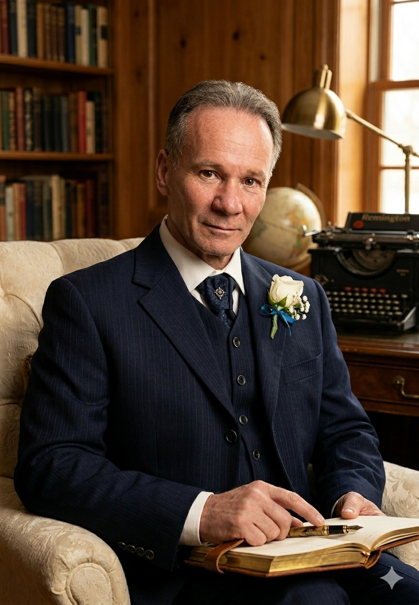

Michele Bottino

Michele Bottino (1972) è uno scrittore e saggista italiano.
La sua produzione comprende opere di narrativa e di saggistica sviluppate all’interno di una linea espressiva orientata al realismo, alla coerenza strutturale e al controllo formale del testo. I suoi lavori affrontano temi legati alla dimensione umana, alle dinamiche di potere e al rapporto tra esperienza individuale e contesto storico.
Profilo autore
La scrittura di Michele Bottino si distingue per un’impostazione essenziale e priva di artifici, fondata su precisione linguistica, chiarezza espositiva e coerenza narrativa. L’elaborazione delle opere si sviluppa attraverso un processo rigoroso di costruzione e verifica del testo, integrato nella pratica della scrittura.
Il suo lavoro si caratterizza per un approccio controllato alla scrittura, in cui ogni elemento è organizzato secondo criteri di coerenza e verificabilità, con l’obiettivo di produrre opere solide, leggibili e prive di ridondanze.
Attività
L’attività di Michele Bottino è orientata alla produzione di testi narrativi e saggistici. La narrativa e la saggistica non vengono sviluppate come ambiti separati, ma come espressioni diverse di una stessa visione autoriale, fondata su controllo formale, linearità espositiva e coerenza interna.
Accanto alla produzione narrativa e saggistica, svolge anche attività di scrittura di testi per ambito musicale, in qualità di autore dei testi.
Opere
Nel corso della sua attività ha pubblicato romanzi e saggi, tra cui Stige, Il deposito delle anime, Intrighi Invisibili, Oniro, EUROPA: Anatomia di un crimine e L’Uomo Consapevole.
Vai alle opereLinea di scrittura
Michele Bottino si colloca nell’ambito della scrittura narrativa e saggistica contemporanea con un’impostazione fondata sul controllo formale e sulla coerenza strutturale del testo. La sua produzione si distingue per una riduzione sistematica dell’artificio espressivo e per una costruzione rigorosa, orientata alla chiarezza e alla precisione.
Al centro del suo lavoro vi è una concezione della scrittura come processo di elaborazione controllata, in cui ogni elemento narrativo è sottoposto a verifica interna e a coerenza funzionale. La forma non amplifica il contenuto, ma lo rende leggibile, mantenendo un equilibrio costante tra costruzione narrativa e controllo linguistico.
Leggi la poeticaNota autore
Michele Bottino (1972) è uno scrittore e saggista italiano. La sua scrittura si sviluppa attraverso una linea espressiva essenziale, controllata e orientata alla restituzione del reale senza artifici.